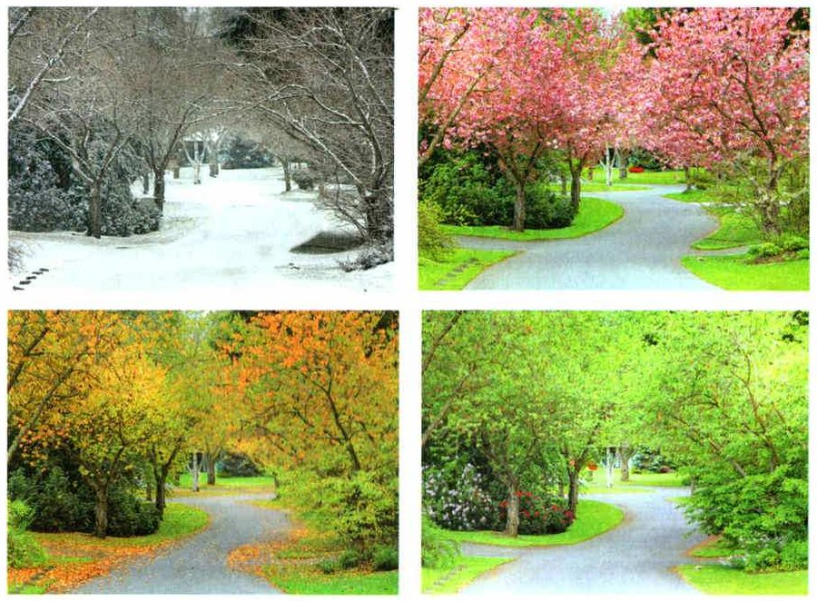
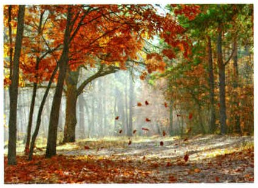
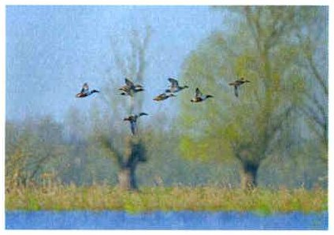

Длина дня — сигнал
Длина дня меняется в течение года всегда одинаково, без скачков. Погода может обмануть: бывает тёплый день в ноябре или снег в мае. А длина дня не обманывает — это точный сигнал, что скоро весна, лето, осень или зима. Ответ организмов на изменение длины дня называют фотопериодизмом.
Если день становится длиннее, организмы готовятся расти и размножаться. Если короче — готовятся к зиме.
Подготовка к зиме долгая: организм перестраивается и запасает питательные вещества. Поэтому она начинается задолго до холодов.
Фотопериодизм. Длина светового дня в течение года изменяется закономерно и не подвержена колебаниям. Эти изменения служат точным сигналом приближения весны, лета, осени, зимы. Реакции организмов на изменение длины дня называется фотопериодизмом.
Длина светового дня для организмов имеет сигнальное значение, свидетельствующее о предстоящих изменениях в природе. Если день удлиняется, то организмы начинают готовиться к росту и размножению. Если день сокращается, организмы начинают готовиться к зиме.
На подготовку к зимнему периоду требуется длительное время для физиологической перестройки организма и накопления необходимого запаса питательных веществ. Такая подготовка начинается задолго до наступления холодов.
1. Почему длина дня — точный сигнал смены времён года?
2. Как организмы отвечают на удлинение и сокращение дня?
Годовые ритмы: весна и лето
Смена времён года — одно из самых общих явлений в живой природе. Каждый год повторяются и трудные для жизни периоды, и благоприятные. Поэтому у организмов чередуются периоды роста, размножения и глубокого покоя — так, чтобы плохое время года встретить самыми устойчивыми. А размножаются они в самый благоприятный сезон. Это годовые ритмы (рис. 94): приспособление к тому, что природа меняется каждый год.
Во многих районах нашей страны благоприятное время длится 6—7 месяцев. Ранняя весна: тает снег, у берёзы начинается сокодвижение. Когда теплеет до +5 °С, зацветает берёза, распускаются почки, прорастают семена, пролежавшие в почве всю зиму. В разгар весны цветут калина, фруктовые деревья и кустарники.
Начало лета — самые длинные дни. Цветут малина, шиповник, кипрей, начинается ягодный сезон. В середине лета созревают земляника, красная и чёрная смородина, крыжовник. К концу лета — брусника.
Годовые ритмы. Сезонная периодичность относится к числу наиболее общих явлений в живой природе. Годовые ритмы позволяют организмам приспосабливаться к сезонной смене природных условий (рис. 94). Регулярно повторяются как трудные для выживания организмов периоды, так и благоприятные. Поэтому в жизни организмов периоды роста, размножения, глубокого покоя закономерно чередуются и повторяются так, что неблагоприятное время года они встречают в наиболее устойчивом состоянии. В наиболее благоприятный сезон организмы размножаются.
Периодичность в жизни организмов является приспособлением к годичному изменению природных условий. Она проявляется в выработке ежегодного ритма в их жизнедеятельности, связанного с климатическими факторами.
Во многих районах нашей страны благоприятный для развития организмов период обычно продолжается 6—7 месяцев. Признаком ранней весны служит таяние снега. В это время начинается сокодвижение у берёзы. При повышении температуры до +5 °С зацветает берёза, распускаются почки у большинства растений, прорастают семена, всю зиму пролежавшие в почве. В разгар весны цветут калина, фруктовые деревья и кустарники.
Для начала лета характерны самые продолжительные дни. В это время цветут малина, шиповник, кипрей и начинается ягодный сезон. В середине лета созревают плоды земляники, красной и чёрной смороды, крыжовника. К концу лета созревают ягоды брусники.

▲ Найди на фото зиму, весну, лето и осень.
3. Зачем организмам годовые ритмы?
4. Какие признаки ранней весны называет учебник?
Осень и зима у растений
С приходом осени питательные вещества уходят из листьев в стебли, корни и другие органы, которые зимуют. День становится намного короче, холодает. В клетках листьев замедляются и постепенно останавливаются все жизненные процессы, и в них накапливаются ненужные вещества.
Когда холодает, вода в почве замерзает и почти не поступает в корни. Если бы листья остались на дереве и продолжали испарять воду, растение погибло бы от иссушения. Поэтому многие многолетние растения осенью сбрасывают листья. Это листопад (рис. 95). Растение, которое часть года стоит без листьев, называют листопадным. Осень заканчивается опаданием листьев, и наступает зимний покой.
Зелёными зимой остаются ель и сосна. Их хвоинки маленькие и покрыты толстой кожицей — кутикулой, поэтому зимой они испаряют очень мало воды.
С наступлением осени у растений идёт усиленный отток питательных веществ из листьев в стебли, корни и другие зимующие органы. В это время значительно сокращается длина светового дня, снижается температура воздуха. К осени в клетках листьев замедляются и постепенно прекращаются все жизненные процессы, накапливаются ненужные вещества.
С похолоданием вода в почве замерзает и её поступление в корни растения практически прекращается. Если бы листья остались на растении и испарение с их поверхности не прекращалось, то растение погибло бы от иссушения. Поэтому многие многолетние растения с наступлением осени сбрасывают листья. Этот естественный процесс называют листопадом (рис. 95). Если многолетнее растение в течение какого-то времени находится в безлистном состоянии, его называют листопадным. Заканчивается осень отмиранием и опаданием листьев. Наступает период зимнего покоя.
Зелёными на зимний период остаются ель и сосна. У этих деревьев хвоинки имеют небольшую поверхность и покрыты толстой кутикулой. Поэтому зимой они испаряют очень мало воды.

▲ Зачем дереву сбрасывать листья? Ответ — на схеме ниже.
часть года стоят без листьев: берёза, яблоня
зелёные круглый год: хвоинки маленькие, с толстой кутикулой — испаряют мало воды
5. Зачем многим растениям осенью сбрасывать листья?
6. Почему ель и сосна остаются зелёными зимой?
Животные в трудное время года
У животных способов пережить трудное время больше, чем у растений. Многие заранее запасают в теле питательные вещества: зимой корма меньше и его труднее найти.
У птиц и зверей бывает линька — смена шерсти и перьев. К зиме у зайца-беляка, горностая, песца отрастает густая белая шерсть.
Ещё один способ — спячка. Зимняя спячка бывает от холода, летняя — от сильной жары и сухости. Во время спячки обмен веществ и потребление кислорода сильно снижаются, многие животные впадают в глубокое оцепенение. Бурые медведи спят зимой в берлогах, которые готовят заранее.
А многие животные просто уходят туда, где лучше. Это миграции — переселения на большие расстояния, когда меняются условия жизни. Осенью к местам зимовки улетают скворцы, ласточки, стрижи, аисты и многие другие птицы (рис. 96).
Перенесение неблагоприятных сезонных условий животными. У животных приспособления к перенесению неблагоприятных условий более многообразны, чем у растений. Многие животные заранее накапливают в организме питательные вещества в связи с уменьшением количества и доступности корма в зимнее время. У птиц и зверей наблюдается линька — смена шерстного и перьевого покрова. Густая белая шерсть отрастает к зиме у зайца-беляка, горностая, песца и других зверей.
Своеобразным приспособлением к перенесению неблагоприятных сезонных явлений служит спячка животных. Различают летнюю и зимнюю спячку. Летняя наблюдается при слишком высоких температурах и снижении влажности воздуха. Зимняя спячка происходит при понижении температуры. В период спячки у животных значительно снижается уровень обмена веществ и потребление кислорода. Во время спячки многие животные впадают в глубокое оцепенение. В специально подготовленных берлогах спят бурые медведи.
Миграции животных. Широко распространённым приспособлением к неблагоприятным условиям у многих животных являются миграции — перемещения на значительные расстояния, вызываемые сменой условий существования. Осенью к местам зимовки улетают скворцы, ласточки, стрижи, аисты и многие другие птицы (рис. 96).

▲ Куда и зачем летят птицы осенью?
7. Какие приспособления помогают животным пережить неблагоприятное время года?
8. Что происходит с животным во время спячки?
9. Что такое миграции? Приведи примеры.
Итоги главы 3
Фотопериодизм · Листопад · Спячка · Линька · Миграции
- Какое значение для организмов имеет длина светового дня?
- Какие сезонные изменения происходят в жизни растений?
- Почему организмы размножаются в наиболее благоприятный сезон?
- Какие приспособления к перенесению неблагоприятных условий существуют у животных?
- Что такое миграции?
- Приведите примеры животных, которые впадают в зимнюю спячку.
Почему длина светового дня является важнейшим фактором сезонных изменений в жизни организмов?
Жизнь человека, как и других организмов, зависит от условий среды: пищи, воздуха, воды. От условий зависят и природные зоны на Земле. Организмы приспосабливаются к своей среде — поэтому растения и животные разных природных зон такие разные. Об этом — следующая глава.
Жизнь человека, как и жизнь других организмов, зависит от условий окружающей среды — достаточного количества пищи, воздуха, воды и т. д. В зависимости от условий среды на нашей планете выделяют различные природные зоны. Живые организмы приспосабливаются к условиям среды, поэтому растительный и животный мир природных зон столь разнообразен.
§16 Водная среда: плотность, теплоёмкость, кислород, солёность, свет.
§17 Наземно-воздушная среда: воздух, опора тела, свет, тепло.
§18 Почвенная среда: состав, структура, гумус, обитатели почвы.
§19 Организмы как среда: взаимовыгодные отношения и паразиты.
§20 Сезонные изменения: фотопериодизм, листопад, линька, спячка, миграции.
Проверь себя
Ошиблась — не страшно, попробуй другую кнопку.
Заяц-беляк к зиме становится белым
Смена шерсти.
Бурый медведь зимой спит в берлоге
Обмен веществ снижается.
Аисты осенью улетают на юг
Перелёт к местам зимовки.
Ёж зимой спит в гнезде из листьев
Зимняя спячка.
Песец отращивает густую белую шерсть
Смена шерсти к зиме.
Береговушки покидают норки у Волги
Улетают зимовать в Африку.
Начинается сокодвижение у берёзы
Признак ранней весны.
Самые длинные дни
Начало лета.
Листопад
Вода в почве замерзает — листья сбрасывают.
При +5 °С зацветает берёза
И распускаются почки.
Созревает брусника
К концу лета.
Вещества уходят из листьев в корни
Подготовка к зиме.
1. Что служит организмам самым точным сигналом смены времён года?
2. Сколько длится благоприятный период во многих районах нашей страны?
3. Почему деревья осенью сбрасывают листья?
4. Почему ель и сосна зимой зелёные?
5. Что сильно снижается во время спячки?
6. Что такое линька?
Расскажи вслух
Фотопериодизм и годовые ритмы
- Длина дня меняется закономерно — это точный сигнал смены времён года.
- День удлиняется — организмы готовятся к росту и размножению; сокращается — к зиме.
- Годовые ритмы: рост, размножение и покой каждый год чередуются.
Растения в разные времена года
- Весна: тает снег, начинается сокодвижение, при +5 °С цветёт берёза.
- Лето: самые длинные дни, ягодный сезон.
- Осень: вещества уходят из листьев в корни, листопад; ель и сосна зелёные — испаряют мало воды.
Животные в трудное время года
- Запасают питательные вещества.
- Линька: густая белая шерсть у зайца-беляка, горностая, песца.
- Спячка (бурые медведи) и миграции (скворцы, ласточки, стрижи, аисты).